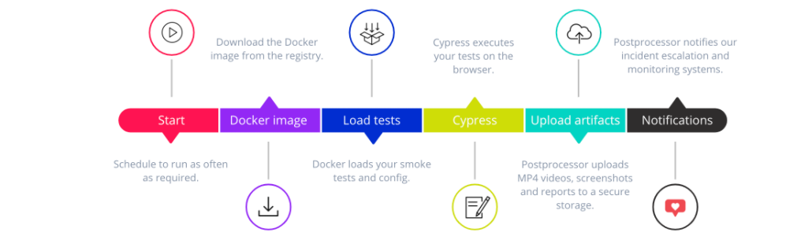
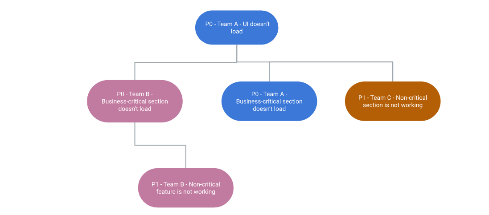
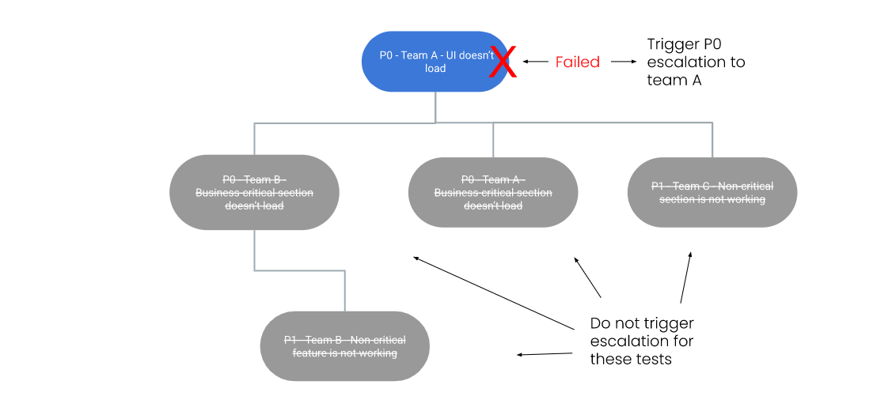

UI smoke-testing with Cypress
In NextRoll, many teams are continuously working on different micro-frontend applications, many little bricks of our dashboards and products.
To help these teams building homogeneous [and awesome] interfaces, we maintain a library of UI components. You can read about it in this blog post.
On the wave of this philosophy of DRY and shared tools, we decided to build a tool to simplify smoke testing of our UIs.
A tool that we wanted to be portable, capable of running both on the developer machine and our CI infrastructures (BuildKite and Jenkins2), and integrated with our incident escalation and monitoring systems.
Smoke testing
According to Wikipedia:
“Smoke testing is preliminary testing to reveal simple failures severe enough to, for example, reject a prospective software release.”
First, let’s define the type of tests we wanted to run with this tool.
Our goal was to run simple tests on our UI to detect significant issues that would disrupt the user experience on our platform. Examples of these major issues can be an application unable to load or a business-critical flow not working (e.g., creating a shining new campaign).
We already have many different ways to ensure the stability of our services:
- Unit and functional tests of our code, even some complex end-to-end tests that we run on pull requests.
- HTTP API testing to guarantee backward compatibility of our interfaces and monitor their availability.
- Monitoring of different layers of our infrastructure, from the databases to the rate of errors of our Production API.
All of these methods have always been fundamental to detect production issues or to prevent bad deploys. Still, most of them are responsible for testing or monitoring specific parts of the system without looking at the broader picture.
One of the common issues with UIs is that they may be powered by many HTTP APIs, and this set of dependencies changes over time. Also, some specific sections of the same dashboard may rely on different APIs, or someone may enable A/B testing that introduces new dependencies.
At a certain point, keeping track of the impact of your back-end systems’ deployments becomes impossible.
Yeah, this should never happen due to the “agreements” that an HTTP API should maintain (no breaking changes), so your API testing should cover you. But having redundancy even on testing is still a good practice because you may not be able to catch all the issues with a single type of testing.
Eventually, having fast and straightforward tests that would help to detect both a bad deployment and major outages of the UI was a double achievement for our goal.
Finding the best framework for our needs
To achieve our goal, we started by studying the best UI testing frameworks on the market to choose the perfect one for our needs.
We wanted a framework that didn’t require learning new languages or complex API, possibly based on technologies/libraries already known to our teams, to reduce the learning curve to adopt our tool.
A reliable framework to allow us implementing stable tests, with the possibility to visualize the test execution.
Many of us already had experiences with Selenium and the effort to maintain it and ensure our tests’ stability. This time, we wanted stable tests!
We also used services like New Relic Synthetics and also the DataDog alternative, for a while. They actually seem more stable than Selenium and with some excellent features, but, eventually, we were not happy to write our tests on their UIs without the ability to store them on our repositories. This also required an extra effort during the deployments because we weren’t able to automatically update the tests, and we needed to jump on their UIs to address any change on our applications. After this experience, we decided that having the ability to adopt versioning of the code and automatically update our tests after each deployment were two key features for us to simplify the operations around the release of a new version of our product.
After some experiments, we found our best candidate: Cypress!
Cypress.io
Cypress is an open-source framework for end-to-end testing that you can find on https://cypress.io.
It has a brilliant architecture that does not rely on Selenium. Instead, Cypress is executed in the same run loop as your application, which allows the framework to have native access to the DOM, the window, your application. This approach could also allow us to intercept and modify HTTP requests efficiently, and directly connect Cypress to your Redux store.
You can read more about how Cypress works on their website.
Users can write tests in JavaScript or TypeScript, and Cypress already provides well-known testing libraries like Mocha, Chai, and Sinon.
It supports Mocha reporters, like Mochawesome:
{
"reporter": "mochawesome",
"reporterOptions": {
"reportDir": "output/reports",
"overwrite": false,
"html": false,
"json": true
}
}
It also records each test to a different mp4 file, so you can watch the test execution and spot any UI issue.
Writing a test
Cypress API are very simple, you don’t even need to have a look at their documentation to understand this test:
describe("An example", () => {
before(() => {
// Here you can setup your tests.
// As example, you could log in to your application.
prepareYourTest();
});
it("Should load", () => {
cy.visit(
`${Cypress.env('HOST')}/test-url`
);
// After .visit(), we want to check if the next page H1
// contains "Hi!".
// As you can see, we don't need to wait for
// the page to be ready, this is on Cypress which
// will automatically wait for your H1 to be visible
// (or, if your H1 doesn't appear, it will fail after a timeout).
cy.get("h1").should("contain", "Hi!");
// Let's also confirm that we are on the right URL.
cy.url().should("include", "test-url");
// Now, let's find an entry on our navbar,
// and let's click on it.
cy.get("div.main-navbar")
.contains("Section 1")
.click();
// Here too, we don't need to write code to
// wait for our application to be
// ready: Cypress will take care of it.
cy.get("div.main-page>h2").should(
"contain",
"It works!"
);
});
});
See? No “wait until visible” commands!
Distribute to our teams
Finding the framework was not the end of our journey. We needed to make the setup as easier as possible and abstract some Cypress complexities.
One Docker image to rule them all
We decided that distributing our tool as a Docker image would simplify the maintenance and the adoption of the tool.
Also, Cypress requires some setup and tuning, and we wanted to abstract this to other teams.
Shipping our tool as a Docker image also allows us to solve this complexity by encapsulating the Cypress instrumentation and post-processing logic. Engineers will need to provide the required config files and run the Docker command they find on the documentation.
Our base image is built from one of the official Docker images for Cypress, cypress/browsers:node12.19.0-chrome86-ff82. You can find the complete list of images they prepare here: https://github.com/cypress-io/cypress-docker-images.
Let’s have a look at the lifecycle of a test execution: 
This approach requires teams to have a minimal boilerplate into the application:
- A Dockerfile, to download our Docker image and load their tests into it;
- Two docker-compose.yml files, one for the developer machine and another for the CI;
- The main difference between these two files is ipc: host on the developer configuration (and a volume so they can see the output of their tests).
- A JSON file representing the main configuration, which could be different on each environment to allow configuring different hosts and incident escalation policies (well, I don’t think that a failure on Staging would be worth paging an engineer during the night);
- The test files.
This allows us to store our tests on the repository and edit them using the editor we use every day. Our CI can automatically use the correct version of the tests without requiring us to perform manual adjustments after the deployment.
Another benefit is that our Docker image is fully extensible, just by overriding the files contained into the base Docker image. This allows other teams to build their own Cypress tasks, fixtures, and install more plugins.
Test utilities
Most of our UIs are accessible only after signing in to our application, so we built a simple utility that can be run from the before hook to instrument the session by signing in using the user that is available in the Cypress’ environment.
For teams that want to use TypeScript, we also published a little NPM package to enable type hinting for Cypress and these utilities on their editor.
Monitoring and incident escalation
Having a smoke testing tool not being integrated with the services we use every day would have been pretty useless.
For this reason, we enable the Mochawesome reporter support in Cypress, which creates a JSON file per test file.
Then, we built a simple Python script to post-process these reports:
- It uploads all the artifacts (reports, MP4 videos, and screenshots) to a secure storage;
- It emits key metrics (test duration and result) to DataDog;
- In case of failures on tests integrated with PagerDuty, it triggers an incident to escalate the issue quickly.
- Optionally, it posts a message on Slack with a summary of the results:

Monitoring and incident escalation
Having a smoke-tester running on our infrastructure means that we should monitor its stability, too, to ensure it is appropriately testing our applications.
This was as easy as setting a DataDog monitor that would alert if the smoke testing tool doesn’t emit metrics for a while.
Reducing the noise
Nobody wants to wake up in the middle of the night because they have been paged for a false alarm. It’s a pain, which reduces the confidence in the smoke testing.
We can mitigate this situation by applying a retry logic, and we are doing this by rerunning the whole suite if it fails. In the future, we plan to retry just the tests that failed to reduce the notification delay in case of serious issues.
The tool also takes care not to repeatedly send the same notifications if a specific test keeps failing. It’s capable of resolving the PagerDuty incident once the test succeeds again.
Also, it’s not very nice when you’ve been paged for an issue that is not under your domain, and you just need to point to the right team.
This can easily happen on UIs that have multiple ownerships. In our case, a team is usually in charge of the application, and various teams own sub-sections or specific features.
Mitigating this was a little bit harder than implementing a retry logic.
We chose to resolve this by implementing a hierarchy model that prevents incident escalation to the branches of a failed node.
Hierarchy of tests
Let’s see an example: 
We have three teams:
- Team A is the team owning the application. They are responsible for any significant outage that causes the UI not to load at all due to, for instance, infrastructure issues.
- Team B and C own sub-sections of the UI, either critical (P0) or non-critical (P1 or lower) sections.
Let’s assume the whole UI doesn’t load at all because the web service is down. If the root fails, our tool doesn’t notify the other teams: 
Team A will be alerted of the issue, while team B and C will sleep peacefully because the failures on their tests were caused by the application outage.
This concept of hierarchy allows us to define custom notification rules for each different team.
Case study: smoke testing the email verification
As we recently started to roll out an email verification process during the signup flow, we wanted to ensure its stability over time.
To properly test this flow, we set up a smoke testing instance that’s able to connect to the email server to grab the verification token and complete the process. This was as easy as declaring a new Cypress task that relies on the NPM package gmail-tester to return the email messages from our Gmail-powered account.
As this new flow has been implemented on various back-end and UIs, this smoke testing tool is a nice solution for us to ensure that the interactions between these systems will continue to be stable over time.
Conclusions
Almost one year has passed since the first release of this tool, and various teams are currently using it for their own applications.Was Cypress a good choice?
Yes, for many reasons:- We managed to easily integrate it into our workflow.
- Teams are adopting our tool with low friction, and some of them also made some contributions to add new Cypress plugins or features to it.
- Overall, our simple tests look stable.
Also, the ability to easily see the test executions by looking at the recordings is a key feature for us, and it actually helped us during nightly incidents.
Would you expand the scope of the tool?
Right now, we are only using it for smoke testing, and we don’t plan to support other types of tests like E2E or acceptance testing.
Even though Cypress is far above Selenium in terms of stability, it’s not so easy to define new tests for complex scenarios. So, following the test pyramid and creating tests only for the critical UI paths is, in our experience, the best approach.
Next steps
We always want to improve our tools, so we already have some ideas:
- Rework the retry logic (we mentioned this before) only to retry the failed tests, as right now, we are retrying the entire suite.
- Play with the Performance API to extract more metrics regarding our UIs, like the Resource Timing, which allows us to retrieve network timing data regarding the loading of the application’s resources.